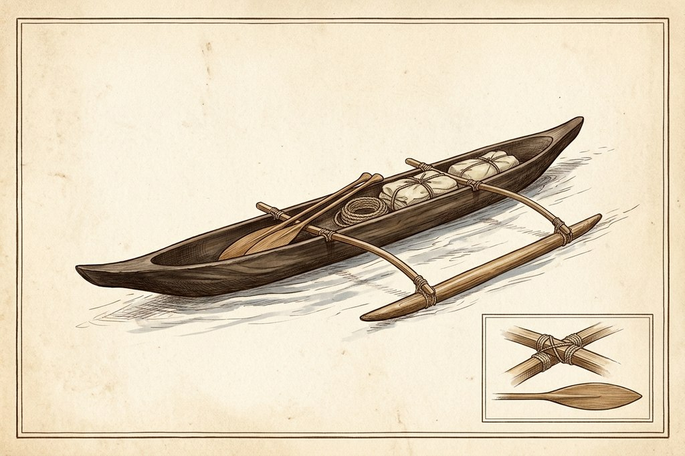
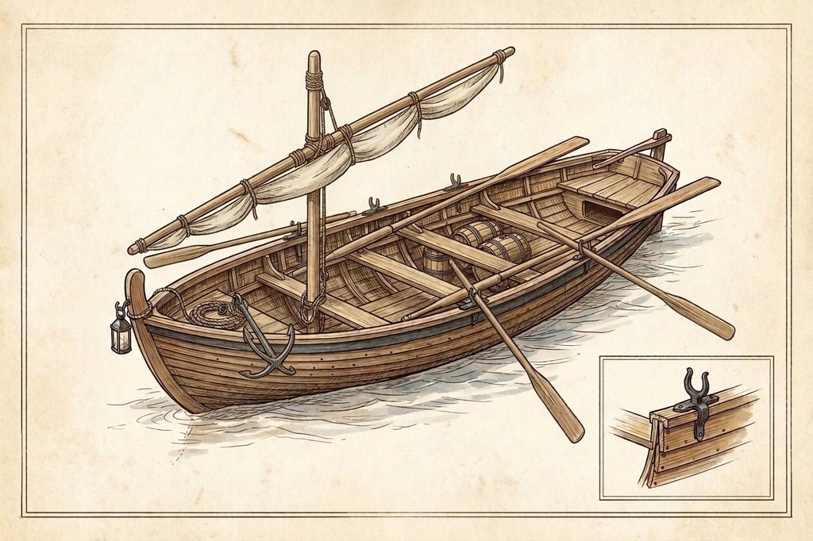
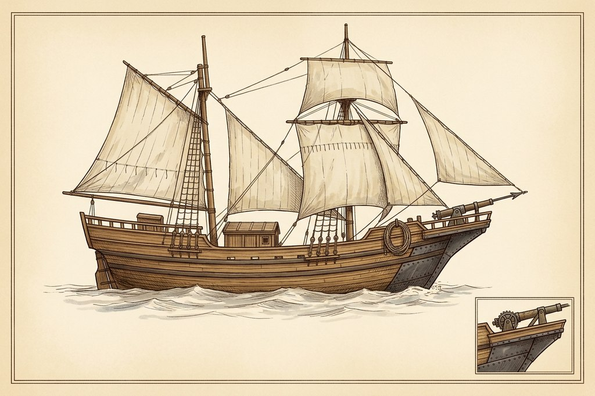

Mares, Frotas e Navegação
“Em terra firme, um senhor mede seu poder pelos muros que ergue; no mar, mede-se pela madeira que não apodrece, pelo cabo que não parte na tempestade e pela mão que sabe largar o ferro antes de rasgar a quilha.”
Embarcações fluviais e costeiras

Esculpida em tronco único curado ao fumo e estabilizada por flutuador lateral de madeira flexível amarrado com fibras vegetais impermeabilizadas com H19 (erva-de-rede), a piroga silvana desliza onde qualquer quilha pesada encalharia. Não usa pregos de ferro — o que impede ferrugem nos igarapés ácidos do Pântano de Voernock e permite reparos rápidos apenas com talha e corda.
Uso em mesa e propriedades: concede +2 em Furtividade aquática sob neblina ou copa fechada e pode ser erguida e carregada por terra por dois exploradores (38 kg vazia) para contornar cachoeiras, represas ou postos de pedágio. Não suporta mar aberto sob vento forte (-4 em Navegação fora de rios, lagoas e baías abrigadas).

O barco de trabalho universal do continente, exatamente como tabelado no Tomo I: costado trincado de carvalho pregado sobre cavernas curvas, quatro remos longos em forquetas de ferro e um pequeno mastro desmontável para aproveitar a brisa de estuário. Serve como lancha de desembarque das grandes naus, barco de pesca de A01 (lumeça) e transporte discreto no estuário de Merlinport.
Uso em mesa e propriedades: pode ser içado nos turcos de qualquer embarcação de porte E05 ou superior como bote salva-vidas. Aceita a instalação de um único suporte leve na proa para farol de óleo ou lança-arpão manual reforçado, mas vira se atingido de través por mar grosso sem sucesso em Navegação CD 15.

Fundo chato reforçado, boca larga e mastro rebatível com dobradiça de ferro para passar sob os arcos monumentais da ponte de Pontáuria. Sem essas barcaças, Altavanne ficaria sem o trigo de Dahrma em duas semanas e o minério de Aeraneas jamais chegaria aos estaleiros do estuário.
Uso em mesa e propriedades: estabilidade excepcional em águas internas (ignora penalidade de convés instável para besteiros e combatentes a bordo), excelente esconderijo para cargas volumosas ou companhias inteiras viajando disfarçadas de mercadores de grãos. Em mar aberto fora de estuários calmos, sofre -4 em Navegação e corre risco imediato de alagamento sob ondas altas.

Proa fina como lâmina, calado inferior a um metro e meio e duas vergas latinas inclinadas que permitem orçar quase contra o vento. Desenvolvida pelos pilotos de Corallis para guiar mercantes pelos labirintos de pedra submersa do Mar dos Corais, tornou-se também a embarcação predileta de correios diplomáticos e contrabandistas de ervas de Porto Esmeralda.
Uso em mesa e propriedades: concede +2 de bônus de embarcação em Navegação & Náutica para cruzar recifes, bancos de areia e canais estreitos, além de +1 em testes opostos de perseguição costeira onde navios maiores precisam reduzir pano para não rasgar a quilha.
Embarcações médias de travessia e corso

A rainha das rotas rápidas de Alenia, fiel à referência do Tomo I (1.500 PP e 120 PP/mês). Seus dois mastros de velas longitudinais exigem menos braços nas vergas do que o pano redondo tradicional, permitindo que uma companhia enxuta de exploradores mantenha velocidade superior à da maioria dos navios mercantes e patrulhas pesadas.
Uso em mesa e propriedades: em perseguições em mar aberto com vento lateral ou oblíquo, recebe +2 nos testes de Navegação para abrir ou fechar distância. Possui camarote de popa para mapas e cirurgia, porão enxuto para 25 toneladas e espaço limpo na proa para um Escorpião Giratório (M13) ou Lança-Arpão de Catraca (M14).

Herdeiro dos antigos navegadores orientais celebrados na Crônica (T017), o Corta-Vagas combina três mastros de velas esteiradas com ripas horizontais — que podem ser rizadas em segundos por uma única corda quando uma rajada súbita desaba sobre o Mar Intransponível — e um casco subdividido internamente por anteparas estanques de cedro oleado.
Uso em mesa e propriedades: graças às anteparas estanques, o Corta-Vagas ignora os efeitos de alagamento do primeiro Rombo na Linha d'Água sofrido em cena, isolando a água num único compartimento. Além disso, seu leme fenestrado reduz em 2 a dificuldade de manobras bruscas sob tempestade.

Construída com cavername dobrado e roda de proa revestida em chapas de ferro batido, a baleeira boreal foi desenhada para abrir caminho por banquisas flutuantes sem esmagar o próprio costado e para suportar o tranco descomunal de uma fera marinha fisgada na linha. Seu abrigo de convés fechado com fogão a carvão mineral protege a tripulação da geada letal do norte.
Uso em mesa e propriedades: tripulantes em descanso a bordo recebem +2 contra Exaustão por frio extremo; a plataforma de proa concede +1 no acerto de Lança-Arpões de Catraca (M14) e impede que uma criatura Enorme ou Colossal fisgada arranque a amurada ao mergulhar.

Baixo na linha d'água para demorar a ser avistado no horizonte brumoso, o bergantim de Ravena une velame misto a oito pares de remos auxiliares desmontáveis. Quando o vento morre e uma caravela carregada fica imóvel como presa atada, o bergantim recolhe as velas e avança em silêncio pela popa cega do alvo.
Uso em mesa e propriedades: não fica imobilizado em Calmaria; amuradas preparadas para ganchos e Corvo de Ferro concedem +2 nos testes de aproximação para Abordagem, e seu convés corrido acomoda uma companhia inteira de assalto pronta para saltar.
Grandes cascos mercantes e de guerra

O navio-padrão do comércio transmarino de Alenia (4.500 PP e 120 km/dia conforme Tomos I e II). Com bojo largo, porão profundo em dois pavimentos, guindaste central de carga e castelo de popa elevado, uma única viagem bem-sucedida carregada de especiarias de Gaddra, vinhos de Biemont ou vidro de Kalis pode pagar um terço do seu próprio casco.
Uso em mesa e propriedades: autonomia de provisões e água doce para até 45 dias em mar aberto sem reabastecer; o castelo de popa funciona como reduto defensável (meia cobertura +2 na Defesa contra invasores que subam pelo convés central).

Comprida, esguia e movida por bancadas de remadores livres juramentados da Liga (Corallis proíbe galés de escravos em suas frotas oficiais, pois homens livres defendem o convés quando soa a abordagem), a Galé de Recife domina estreitos, canais e batalhas costeiras. Já sai do estaleiro com Esporão de Proa em Bronze (M17) fundido à quilha e plataforma dianteira para Balista de Torção (M15).
Uso em mesa e propriedades: independe da direção do vento durante rodadas de combate naval (1 minuto), podendo girar no próprio eixo e realizar Arrancada de Abalroamento (+2 no ataque de esporão). Em contrapartida, seu casco longo e baixo sofre -2 em testes de Navegação sob tempestades oceânicas severas.

Construído inteiramente com o cerne escuro e oleoso das árvores ancestrais da Floresta Negra, o navio-longo kalita une flexibilidade para cavalgar as vagas brutais do Mar Intransponível a um calado capaz de subir estuários rasos de surpresa. Escudos redondos encaixados ao longo da amurada protegem os remadores contra chuvas de flechas e virotes.
Uso em mesa e propriedades: por já ser nativamente de Madeira Negra, é imune ao muco corrosivo do Verme-de-Maré, à podridão marinha e ao teredo, possui Limiar Estrutural 10 e concede meia cobertura (+2 Defesa) aos tripulantes posicionados nas bancadas laterais.

O maior navio construído pelos reinos humanos sem recorrer a magia ou pólvora: quatro mastros, castelos ameados de proa e popa erguidos como torres de madeira sobre as ondas, gáveas fechadas para besteiros e baterias de Balistas Pesadas de Torção (M15). Pouquíssimos exemplares navegam em 418 — reservados ao transporte real de adamante, embaixadas solenes e capitânias de guerra.
Uso em mesa e propriedades: seus castelos altos impõem -3 nos testes de Escalada/Abordagem de embarcações menores tentando subir pelo costado, enquanto atiradores nos castelos recebem +2 no acerto por vantagem de altura e cobertura de ameias. Exige águas profundas e rebocadores/botes em portos rasos.
Arpões, lanças navais e hastes de convés
(Lembrete do Tomo I: todas as armas corpo a corpo e de arremesso abaixo somam Mod(FOR) ao dano.)

Artilharia de convés e engenhos sem pólvora
As armas abaixo ocupam Slots de Convés das embarcações e operam nas rodadas navais (1 minuto) ou, quando carregadas previamente, para 1 disparo devastador em escala pessoal antes de exigir múltiplos turnos de recarga. Ataques de artilharia naval usam 1d20 + Mod(DES ou INT) + Grau em Armas à Distância ou Engenharia & Mecânica.

Resumo da Artilharia e Engenhos Navais (M13–M18)
| Cód. | Engenho Naval | Slot | Preço | Guarn. | Dano / Efeito | Alcance |
|---|---|---|---|---|---|---|
| M13 | Escorpião de Amurada | Leve | 180 PP | 1 | 2d8 perf. (19–20/×2) | Média (90m) |
| M14 | Lança-Arpão de Catraca | Médio | 320 PP | 2 | 3d8 (20/×3) + Fisga navio/monstro | Curta (45m) |
| M15 | Balista Pesada de Torção | Pesado | 550 PP | 2–3 | 4d8 estrutural (ignora 4 LE) | Longa (180m) |
| M16 | Ponte Corvo de Ferro | Médio | 220 PP | 2 | 2d6 + trava navios para abordagem | Costado (0–9m) |
| M17 | Esporão de Bronze | Proa | 450 PP | Timão | 4d8–6d8 na linha d'água (½ LE) | Costado |
| M18 | Alcatrão & Cal Virgem | Leve | 140 PP | 1–2 | Incêndio (2d6/rod.) ou Cegueira (CD 15) | Curta (24m) |